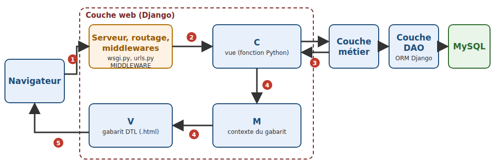
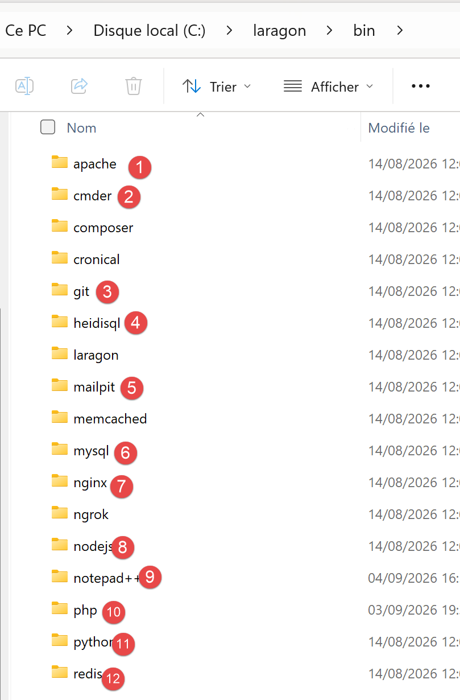
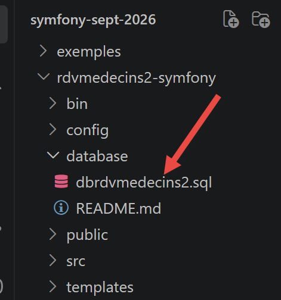
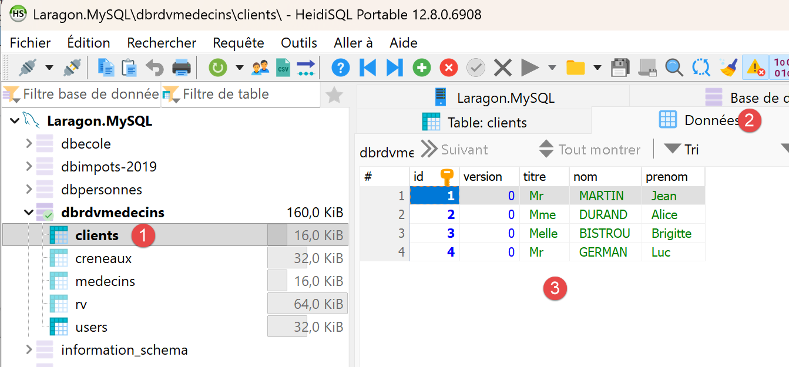
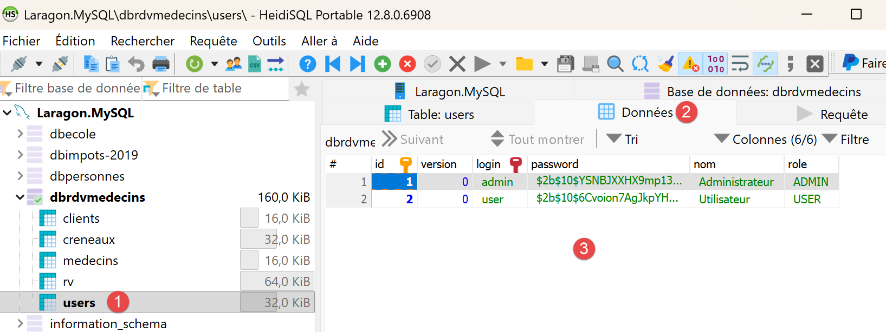

1. Introduction
The document’s PDF is |HERE|.
The document’s codes are |HERE|.
This document is a product of Anthropic’s IA Claude. It follows the document “Step-by-Step Introduction to the [Symfony] Web Framework” (2026), which itself followed the documents “Step-by-Step Introduction to the [Laravel] Web Framework,” "Step-by-Step Introduction to the [Flask] Web Framework," "Step-by-Step Introduction to the [Spring MVC] Web Framework," "Step-by-Step Introduction to the [ASP.NET Core MVC] Web Framework," and "Step-by-Step Introduction to the [NestJS] Web Framework" (2026). This document leaves the [PHP] world to return to the [Python] language, that of the [Flask] course, but with a framework of a completely different scale:
- the [Symfony] framework is replaced by the [Django] 6.1 framework, using the [Python] language (version 3.12 or later);
- the [Twig] views are replaced by the [Django] templates, written in its template language, DTL (Django Template Language);
- The Form and Validator components of [Symfony] are replaced by the forms from [Django] (the [django.forms] module), which describe both the fields of a HTML form, their conversion, and their validation;
- the Security component of [Symfony] (firewall, authenticators, roles) is replaced by middleware and decorators written specifically for this purpose, using the [PyJWT] library for JWT tokens and the [bcrypt] library for passwords;
- the event listeners in [Symfony] are replaced by the middleware in [Django], which wraps the processing of each request, and by its signals;
- ORM is replaced by ORM from [Django], still based on [MySQL].
The document closely follows the structure of the [Symfony] course: first, numerous small projects, each focused on a single concept, followed by a comprehensive case study—a web application for scheduling appointments at a medical practice—with all files fully commented. The examples have the same numbers and cover the same topics as in courses [Symfony], [Laravel], [Flask], [Spring MVC], and [ASP.NET Core MVC]: a reader familiar with one of these courses can compare the frameworks on a case-by-case basis. However, this is not necessary: this document stands on its own and assumes no prior knowledge of these frameworks. The only prerequisites are a basic understanding of web programming (the HTTP protocol, the HTML language) and the fundamentals of the [Python] language (variables, lists, dictionaries, functions, classes, modules). The less common features of [Python] used in the examples (decorators, data classes, type annotations, context managers, generators, etc.) are explained when they first appear.
1.1. Django’s Role in a Web Application
A web application is often built in layers, with each layer communicating only with its immediate neighbors:

- the web layer receives requests HTTP from the browser and returns pages HTML to it. This is the layer that [Django] helps us write;
- the business layer contains the application’s business rules (e.g., “a patient can have only one upcoming appointment”). It knows nothing about the web: it could just as easily serve a command-line application;
- the data access layer (DAO layer, for Data Access Object) reads from and writes to the database. We will use the ORM (Object Relational Mapper) from [Django], which maps table rows to [Python] objects.
The web layer itself follows the MVC (Model-View-Controller) pattern. This is where you need to pay attention to the terminology, because [Django] does not use the terms from MVC in their usual sense. The documentation for [Django] refers to the MTV architecture (Model–Template–View):
- what MVC calls the controller (C), [Django] calls a view: it is a [Python] function (or a class) that processes a type of request (for example, [GET /agenda]). A view reads the request parameters, invokes the business layer, and then selects the page to display. In the [Symfony] course, this was an action of a controller;
- what MVC calls the view (V), [Django] calls a template: a file HTML that contains expressions [{{ ... }}] and instructions [{% if %}], [{% for %}]..., which the template engine replaces with data. In the [Symfony] course, it was a view ([Twig]);
- what MVC calls the model (M)—the set of data passed to the page—[Django] calls the template context: a dictionary [Python];
- finally, what [Django] calls a model is a class [Python] that represents a database table (the file [models.py]): what [Symfony] used to call an entity.
This document uses the terminology from [Django], since that is the terminology used in its documentation, error messages, and file names ([views.py], [templates], [models.py]): here, a view is therefore always the function [Python] that processes a request, and a template is the file HTML that generates the page. The term “model” has two meanings, which the context always distinguishes: in Chapter 2, a view’s model refers to the data it receives from the request, described by a class; starting in Chapter 7, a model of [Django] is a class of ORM. Finally, the term “page template” (or “layout”) refers to the common template from which other pages inherit (Example 15).
The processing of a request follows the numbered steps in the diagram:
- 1: The browser sends a request, such as HTTP;
- 2: The web server receives the request and passes it to the [Django] application via the [application] object in the [config/wsgi.py] file. During development, this server is the one that includes [Django], launched by the command [python manage.py runserver]; in production, it will be a [Python] server, such as [gunicorn] or [waitress], often placed behind a web server such as [nginx]. [Django] routes the request through a series of middleware components, classes from [Django], and the application that intervene before and after the view (session management, anti-CSRF protection, language settings, security, etc.), and compares the requested path to the application’s routes—described in the [urls.py] files—to select the view responsible for handling this request: this is routing;
- 3: The view requests the data it needs from the business layer; the business layer, if necessary, contacts the DAO layer, which queries the [MySQL] database in SQL, via ORM;
- 4: The view builds the context (the M model) and instructs the template engine to generate the page (function [render]);
- 5: The page HTML generated by the template is the view’s response, which [Django] returns to the browser after passing it back through the middleware.
[Django] is, along with [Flask], one of the two major web frameworks in the [Python] world. Free and open-source, it was created in 2003 by Adrian Holovaty and Simon Willison at the Lawrence Journal-World, a newspaper in Kansas, and released in 2005. It is named after the jazz guitarist Django Reinhardt. It is now developed by a community under the auspices of the Django Software Foundation and runs wherever [Python] ([Windows], [Linux], [macOS]) runs. High-traffic websites use it ([Instagram], [Pinterest], [Mozilla]...). Its motto, “the web framework for perfectionists in a hurry,” clearly reflects its approach: whereas [Flask] provides only a core that is supplemented by extensions, [Django] comes “batteries included”: routing, templates, forms and validation, ORM, and database migrations, sessions, messages, translations, caching, protection against common attacks (CSRF, injection SQL, click hijacking), and even an automatically generated data administration interface. All of this forms a cohesive package, documented in one place, and designed to work together. Compared to [Symfony], [Django] makes different choices: no service container or dependency injection, but [Python] modules that are imported; configuration written in [Python], in a single file ([settings.py]), rather than in [YAML]; views that are simple functions. [Django] also follows a regular release schedule: one release approximately every eight months, and a “long-term support” release ” (LTS) every two years (5.2 in 2025, 6.2 in 2027), and deprecation notices that always precede the removal of a feature by two versions. [Django] can create servers that return JSON to a [JavaScript] client ([Angular], [React], [Vue.js], [Flutter]...), often with the extension [Django REST framework], unlike traditional web applications, where the server generates the HTML pages and the browser simply displays them. This document examines this second use case.
One key difference with [PHP] explains a great deal about [Django]: the application is loaded once, when the server starts up, and then remains in memory to process all subsequent requests (Example 01). What is built at startup (the configuration, the routing table, the objects stored in module variables) is shared by all requests. This is the opposite of [Symfony], which rebuilt the application with each request: we will return to this point frequently, particularly in the chapter on data scopes.
1.2. Tools Used
The examples were written and tested using the following tools (their installation is described in the appendix):
- [Python] 3.13 (any version 3.12 or later is suitable: this is the minimum requirement for [Django] 6.1);
- [pip], the library manager for [Python], and the [venv] module, which creates virtual environments (both included with [Python]);
- the [Visual Studio Code] editor, along with the Microsoft extensions [Python] and [Pylance] (code analysis, execution, debugging) and an extension for [Django] templates (syntax highlighting);
- a modern browser ([Chrome], [Firefox], [Edge]);
- the command-line tool [curl], which displays raw HTTP responses (it is included with [Windows] 10 and 11);
- SGBD [MySQL] 8.4 or later (or [MariaDB] 10.11 or later), for example, the one from [Laragon] under [Windows], starting with the chapter on data access, and for the case study.
[Django] and the other libraries are not part of [Python]: [pip] downloads them from the PyPI repository (Python Package Index) during installation (so you must be connected to the Internet on that day), and installs them in a virtual environment, a project-specific folder (see below). Each project describes its libraries in a [requirements.txt] file. The following table lists the main ones, along with the versions used:
Library | Role | Version |
[Django] | The framework: development server, routing, views, middleware, templates, forms, sessions, messages, translations, cache, ORM; It installs the two libraries it needs: [asgiref] (the link between synchronous and asynchronous code) and [sqlparse] (formatting of displayed SQL orders) | 6.1.1 |
[Babel] | Formatting of numbers, amounts, and dates according to the language (example 16) | 2.18.0 |
[PyJWT] | JWT tokens (chapter on authentication) | 2.15.0 |
[mysqlclient] | The [MySQL] driver used by [Django] (Example 28 and Case Study) | 2.3.0 |
[bcrypt] | Password hashing (case study) | 5.0.0 |
[Django] is typically installed by [pip], after which a project is created using the [django-admin startproject] command, which is installed by [Django] (see appendices):
This command creates a folder named [mon_projet] that contains a file named [manage.py] and a package named [mon_projet] consisting of five files ([settings.py], [urls.py], [wsgi.py], [asgi.py], [__init__.py]). Applications are then added using the [python manage.py startapp nom] command, which creates a folder containing seven files. This is how you start a real project. For learning purposes, this method has one drawback: the generated file [settings.py] already contains about a hundred lines of code, which activate about ten applications and seven middleware components—the purpose of which is not yet clear. The examples in this document therefore start from the other end: Example 01 is the smallest possible [Django] application, and each example adds only the files and settings it needs, written and commented on by hand. The case study at the end follows the structure of a standard [Django] application.
1.3. Run the case study
1.3.1. Installing Laragon
The case study requires the SGBD [MySQL]. Laragon can provide this and more. As of September 2026, Laragon is available at URL and [Download Laragon – Fast & Modern Dev Environment]. Laragon includes tools that allow you to install a web server and the SGBD and [MySQL]:

- in [1], an Apache web server;
- into [2], the SGBD [MySQL];
- to [3], a messaging tool that we will not be using;
- [4] starts all services (Apache, [MySQL], MailPit);
- [5] displays the web page for URL and [http://localhost]. By default, this URL refers to the <laragon-install>\www folder, where <laragon-install> is the Laragon installation folder;
- in [6], launches the HeidiSQL tool, which allows you to manage MySQL databases. We will use this tool to create the database used in the case study;
- In [7], open a terminal where all the binaries needed for Laragon are located in PATH;
- in [8], opens a Windows Explorer window in the folder associated with URL and [http://localhost];
The Laragon installation folder contains the following items:

In [1], the [bin] folder contains numerous applications:

- In [1], the Apache web server;
- in [2], a command-line terminal;
- in [3], a [git] client that allows you to manage different versions of a project;
- in [4], a database manager;
- [5], an email manager;
- in [6], the SGBD and [MySQL];
- [7], another web server;
- in [8], [node.js] to run JavaScript scripts;
- [9], a text editor;
- [10], the PHP interpreter;
- [11], the [Python] interpreter;
- [12], a cache server;
Laragon comes with a comprehensive development environment. In this course, we will use only SGBD, [MySQL], [6], and the [heidisql] tool to manage it graphically. Laragon’s [Python] [11] interpreter may not be recent enough for [Django] 6.1 (you need version 3.12 or later): Instead, we will install [Python] from its official website (see appendices), checking the box in the installer that adds [python] to the machine’s existing PATH.
The README mentioned in the case study indicates that you must enter the following commands in a terminal window opened in the application’s folder:
to create a virtual environment named [Python] and a folder named [.venv], where the application libraries will be installed;
to activate this environment in the terminal (under [Linux] and [macOS]: [source .venv/bin/activate]). The terminal prompt then begins with [(.venv)];
to install the [Python] libraries required for the case study ([Django], [mysqlclient], [PyJWT], [bcrypt]) ;
to run the case study. If you use a [PowerShell] terminal in VSCode, [PowerShell] may refuse to run the activation script, displaying a message stating that “script execution is disabled on this system.” To enable this, for your user account only, enter the following once in a [PowerShell] terminal:
You will need to restart VSCode for this change to take effect. Alternatively, in VSCode, you can select a terminal named [Command Prompt] instead of [PowerShell], where the script [activate] runs without this authorization.
To create the [MySQL] database required for the case study, proceed as follows:

- In [1], all services must be started;
- in [2], the [Database] option allows you to manage the database;
The option [Database] launches a utility called HeidiSQL:

- In [1], you can select various SGBD options. The default value provided is SGBD MySQL. This is acceptable;
- in [2], you log in to HeidiSQL;


- In [1-2], run the file SQL, then select the file [dbrdvmedecins2.sql], which you’ll find in the folder [django-sept-2026/rdvmedecins2-django/database]:

Running the [3] file will create the [dbrdvmedecins2] database used by the case study. To view it, run F5 within HeidiSQL to refresh the display.
Note: The following screenshots show a database named [dbrdvmedecins], whereas the case study database is named [dbrdvmedecins2]. The two databases are virtually identical, so we determined it was unnecessary to take new screenshots.

The database [dbrdvmedecins] has been created. Here is its content:

- in [1-3], the table [clients];
- [id] is the primary key of the table;
- [version] is the row’s version number. This number increments each time the row is modified;
- [titre, nom, prenom] identifies the person;

- in [1-3], the table [medecins];
- [id] is the primary key of the table;
- [version] is the version number of the row;
- [titre, nom, prenom] identifies the person;

- In [1-3], the table of doctors’ appointment time slots:
- [id]: primary key;
- [version]: row version number;
- [id_medecin]: foreign key referencing the doctor’s primary key;
- [hdebut, mdebut]: hour and minutes of the appointment start time. Thus, [8,20] means 8:20 a.m.
- [hfin, mfin]: hour and minutes of the end of the consultation.

- In [1-3], the [rv] table of scheduled appointments;
- [id]: primary key;
- [version]: version number;
- [jour]: appointment date;
- [id_creneau]: foreign key referencing the primary key of the appointment time slot. Since a time slot is linked to a doctor, we know which doctor is handling this appointment;
- [id_client]: foreign key to the number (primary key) of the customer making the inquiry;

- in [1-3], the table [users], which lists the users authorized to use the application;
- [id, version]: primary key, version number;
- [login, password]: user credentials;
- [nom]: user name;
- [role]: the user’s role. [ADMIN] has full access; [MEDECIN] views their own calendar; [PATIENT] (a client of the firm) schedules and cancels their own appointments;
1.3.2. Performing the Case Study
Reviewer’s note: I advise the reader to carry out the case study immediately as described below. Once you fully understand the role of this appointment application, ask your favorite IA to modify the application as follows: from now on, each doctor will be able to:
- set their own consultation slots between two dates. This will allow them to adjust their schedule as needed;
- remove certain time slots from the calendar for a given day—for example, if they are unavailable for personal reasons;
The modification is not straightforward because it involves a change to the database structure. Ask IA to provide you with the new application code and the SQL script to create the new database. To do this, you’ll need to provide them with the ZIP file containing the complete project as well as the SQL script for the old database.
Also, I haven’t reviewed the course created by Claude. He had already produced the courses [NestJS], [ASP.NET Core MVC], [Spring MVC], and [Flask], all of which were perfect. I assumed the same was true for this one. If you run into a problem understanding something, the solution is always the same: ask your favorite IA to explain what you don’t understand. Claude, for example, is very good at this. You may need to “upload” the example you don’t understand to him.
End of note.
The case study at the end of this document is a complete application. Readers will likely want to see it in action before delving into the details of the framework: here’s how to run it. It’s located in the [rdvmedecins2-django] folder, next to the [exemples] folder:
You must have installed [Python] (version 3.12 or later), [Visual Studio Code], and [MySQL] (see appendices). Then:
- Create the [dbrdvmedecins2] database by running the [rdvmedecins2-django/database/dbrdvmedecins2.sql] script. Using [Laragon], open the [HeidiSQL] tool (Database button), then run the script via the File / Run SQL menu (see above). At the command line, from the [rdvmedecins2-django] folder:
- Open the [rdvmedecins2-django] folder in [Visual Studio Code] (File menu / Open Folder), then open a terminal (Terminal menu / New Terminal);
- create the application’s virtual environment, activate it, and then install its libraries: [pip] reads the file [requirements.txt], downloads [Django] and the other libraries, and places them in the application’s [.venv] folder (takes a few tens of seconds). Under [Windows]:
- Under [Linux] and [macOS], the second command is [source .venv/bin/activate]. [Visual Studio Code] displays a window asking if you want to use this environment for the folder: accept; any terminals opened afterward will activate it automatically;
- verify the connection to the database. The application connects to [MySQL] on [127.0.0.1], port 3306, using the user [root] without a password (the default settings for [Laragon]). If your [root] account has a password, enter it in the application’s [.env] file, on the [DB_PASSWORD=] line;
- run the application:
- [Django] displays:
The development server is listening on port 8081 of the machine ([127.0.0.1], i.e., [localhost]). Each request received will be logged in the console, along with the SQL commands sent to the database;
- Open the URL [http://localhost:8081] in a browser:

- Log in with one of the demo accounts, whose password is the same as the username: [admin] (administrator), [pelissier], [tatou], [dupont] (doctors), [martin], [durand], [bistrou], [german] (patients). You must also enter the characters from the image, in uppercase or lowercase.
Upon startup, the command [runserver] verifies the project and, along with [MySQL], connects to the database for this purpose: if the database is inaccessible, the server does not start, and the console displays the error at the end of a long call stack. If the message is [(2002, "Can't connect to server on '127.0.0.1' (10061)")], it means that [MySQL] has not started; with [(1045, "Access denied for user 'root'@'localhost' (using password: NO)")], it means the password is incorrect; with [(1049, "Unknown database 'dbrdvmedecins2'")], it means the script SQL was not executed. If the [python manage.py runserver] command fails with the message [ModuleNotFoundError: No module named 'django'], it means the virtual environment is not enabled (or that [pip install] has not been executed); if the error message is [Error: That port is already in use.], it means that port 8081 is already in use (by another version of the application, for example). The application’s [README.md] file describes other scenarios. Stop the application using [Ctrl-C] in the terminal ([Ctrl-Pause] under [Windows], as stated in the message from [Django], but [Ctrl-C] also works).
Once the reader fully understands the purpose of this appointment application, they can ask their favorite IA to modify it as follows: from now on, each doctor will be able to:
- set their own appointment slots between two dates. This will allow them to adjust their schedule as needed;
- remove certain time slots from the calendar for a given day—for example, if they are unavailable for personal reasons.
The modification is not straightforward because it involves a change to the database structure. You must request the new application code and the SQL script—which creates the new database—from the IA, providing them with the ZIP file containing the complete project as well as the SQL script for the old database. Similarly, if you encounter a point in this document that you don’t understand, the solution is always the same: ask your favorite IA to explain what you don’t understand, providing the relevant example if necessary.
The case study at the end of the document demonstrates how to use the application and then explains each of its files.
1.4. Examples
The examples are stored in the [exemples] folder, with one subfolder per example:
Each example is a small application ([Django]) that runs on its own. All examples use the same libraries, described in the file [exemples/requirements.txt]:
- lines 1–2: comments; in [Python], as in this file, a comment extends from [#] to the end of the line;
- Lines 3–6: the libraries, one per line, with their exact versions: [Django] itself, [mysqlclient] (access to [MySQL], Example 28), [PyJWT] (the JWT tokens, example 25), and [Babel] (language-specific formatting of numbers and dates, example 16). The [==] operator enforces the version; [>=6.1,<6.2] would accept all 6.1.x versions. The two libraries required by [Django] ([asgiref], [sqlparse]) are not listed: [pip] installs them automatically, since [Django] declares them.
[Python] recognizes only one library folder per interpreter. To ensure that each project has its own libraries in the appropriate versions, a virtual environment is created: a folder containing a lightweight copy of the interpreter and its own library folder ([Lib/site-packages] under [Windows], [lib/python3.13/site-packages] elsewhere). To run the examples, create a virtual environment and install their libraries there once and for all in a terminal opened to the [exemples] folder:
[python -m venv .venv] executes the [venv] module from [Python], which creates the environment in the [.venv] folder. The script [activate] (under [Linux] and [macOS]: [source .venv/bin/activate]) modifies the terminal’s PATH: the commands [python] and [pip] then refer to those in the environment, and the prompt begins with [(.venv)]. [pip install -r requirements.txt] installs the file’s libraries. The [exemples/.venv] environment is shared by all 28 examples: it is activated in each terminal where you want to run one. The command [pip list] displays the installed libraries, and [deactivate] deactivates the environment. The [commun] folder contains the CSS [Bootstrap] ([commun/static/bootstrap]) framework, shared by the examples that format their pages (starting with Example 15).
Almost all of the examples have the same structure—that of a standard [Django] project, stripped down to the essentials. For example, the structure of Example 13:
- [manage.py]: the project’s command-line tool, which specifically launches the development server (Example 01);
- [config]: the project’s configuration package: its settings ([settings.py]), its routes ([urls.py], Example 02), and its entry point for a web server ([wsgi.py]). A project created by [django-admin startproject] gives this package the project’s name; we refer to it as [config] in all examples to clarify its role;
- [pages]: an application [Django]: a package [Python] that groups together views ([views.py]), their routes ([urls.py]), and the classes they require. A project is a collection of applications, which the [INSTALLED_APPS] setting lists (example 02);
- [templates]: the templates (from the chapter on templates).
To run an example, open a terminal in its folder (in [Visual Studio Code]: right-click the example folder, then select "Open in the built-in terminal"), activate the virtual environment for the examples ([..\.venv\Scripts\activate] under [Windows], [source ../.venv/bin/activate] elsewhere), and type:
All examples listen on port 8000: you can only run one at a time (or you must change the port: [python manage.py runserver 8001]). Stop the server using [Ctrl-C] in the terminal. You don’t need to restart the server after modifying a [Python] file or a template: the development server monitors the project files and restarts automatically when any of them change (example 01).
When you open the [exemples] folder in [Visual Studio Code], you must specify the virtual environment’s interpreter for the [Python] extension (Python command: Select Interpreter from the command palette, [Ctrl-Maj-P], then [.venv\Scripts\python.exe]): The [Pylance] extension then analyzes all files using the environment’s libraries, including [Django]: In each file, you can take advantage of code completion, navigation to the definition of a class or function ([F12] key), and error reporting. Since all examples include a [config] package, the analysis may confuse the packages of two examples; this has no impact on execution, since each example is run separately from its own folder. To avoid this confusion, simply open the example’s folder directly.
1.5. Document Contents
The document is organized as follows:
Chapter | Topic | Examples |
Views, routing, responses | From the request to the view: routes, applications, responses, redirects, shared services | 01 to 06 |
The view template | Request parameters: reading, conversion, validation via the [Django] forms, POST requests | 07 to 12 |
Templates and forms | the [Django] template language, page templates, fragments, custom tags and filters, forms, validation, PRG, anti-CSRF protection | 13 to 21 |
Internationalization | An application in French and English | 22 |
Data Scopes | query, session, cache, cookies | 23 |
The lifecycle of a request | signals, middleware, route converters, error handling | 24 |
Authentication and Authorization | token JWT in a cookie, authentication middleware, decorators, roles, CAPTCHA, attempt limits | 25–27 |
Layered architecture and data access | Web / Business Logic / DAO with ORM from [Django] and [MySQL] | 28 |
Case Study | The RdvMedecins application, explained file by file | - |
Each example introduces only a few new concepts, and the chapters build on one another: it is best to read them in order. The case study, on the other hand, draws on all the concepts from the previous chapters: whenever relevant, its commentary refers to the example where the concept was introduced. The appendices describe the installation of the tools: [Python], [pip], and the virtual environments, [Visual Studio Code] and its extensions, [MySQL] along with [Laragon], [curl], and the [django-admin] tool.